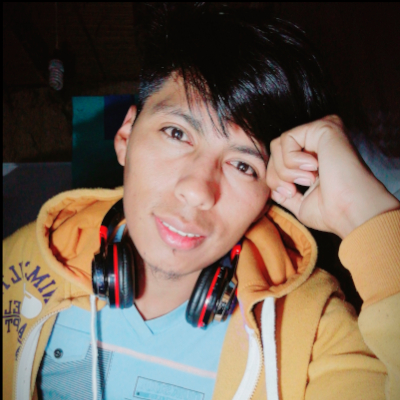

LCJesusI
Me gusta crear sistemas útiles, mejorar interfaces y transformar ideas de negocio en proyectos digitales funcionales.
Soy LCJesusI: estudiante de Ingeniería de Sistemas, Construcción Civil y Contaduría General. Estoy creando proyectos propios relacionados con inventario, POS, gimnasio, barbería, bodega, cálculo y marca personal.

Me gusta crear sistemas útiles, mejorar interfaces y transformar ideas de negocio en proyectos digitales funcionales.
Un perfil real, basado en mis estudios, gustos, proyectos y forma de trabajar.
Soy Jesús Israel Lima Canaza, también uso la marca LCJesusI y las iniciales LCJI. Mi enfoque mezcla programación, contabilidad, construcción civil y administración de negocios reales.
Tengo 13 repositorios en GitHub, donde estoy trabajando portafolios, sistemas de negocio, calculadoras, inventario, bodega, gimnasio, barbería y herramientas administrativas.
Me interesan la programación, los sistemas POS, inventarios, bases de datos, Linux, diseño de marca, herramientas profesionales, electrónica, barbería, construcción y negocios como botillería, minimarket y gimnasio.
Me gusta avanzar por versiones: primero planificar la V1, luego mejorar el diseño, corregir errores, agregar módulos reales y preparar cada proyecto para crecer de forma más profesional.
Quité el enfoque de servicios con precios o testimonios. Esta sección ahora muestra mis líneas reales de aprendizaje y desarrollo.
Estoy creando prototipos para ventas, caja, inventario, clientes, proveedores, reportes, agenda y control administrativo.
Trabajo ideas para gimnasio, barbería, botillería, minimarket y bodega, adaptando cada sistema al tipo de negocio.
Estoy fortaleciendo mi identidad LCJesusI / LCJI con páginas web, diseño visual, proyectos en GitHub y presencia digital.
Selección de repositorios que representan mi avance en desarrollo web, sistemas administrativos, negocios digitales y marca personal.
Sitio web personal de LCJesusI para presentar mi perfil, formación, enfoque, proyectos y medios de contacto.
Proyecto para administrar un gimnasio con enfoque en clientes, membresías, pagos, control y organización operativa.
Sistema orientado al control de bodega e inventario para registrar productos, stock y movimientos de forma ordenada.
Proyecto enfocado en una barbería con estilo propio, pensado para agenda, servicios, clientes y presencia digital.
Calculadora profesional en evolución, pensada para operaciones rápidas, ordenadas y útiles en contextos prácticos.
Sistema administrativo privado para control de negocio, ventas, inventario, caja y organización contable.
Mi perfil combina tecnología, administración, construcción y aprendizaje práctico mediante proyectos.
Desarrollo de aplicaciones, lógica de sistemas, bases de datos y soluciones digitales.
Conocimientos en procesos constructivos, materiales, control de obra, guías técnicas y acabados.
Visión administrativa, costos, control, inventario y organización financiera para negocios.
Este sitio está enfocado en mi identidad LCJesusI, mis estudios, mis intereses y mis proyectos reales. Funciona como portafolio personal y carta de presentación.